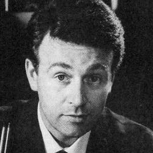

| Home | The Doctors | The Villains | |
|
|||
|
Ian Chesterton is a fictional character in the British science fiction television series Doctor Who and a companion of the First Doctor. He was played in the series by William Russell, and was one of the members of the programme's very first regular cast, appearing in the bulk of the first two seasons from 1963 to 1965. In a film adaptation of one of the serials, Dr. Who and the Daleks(1965), he was played by Roy Castle, but with a very different personality and backstory. Ian appeared in 16 stories (77 episodes) an Chesterton is a science teacher at the Coal Hill School and works with Barbara Wright, a history teacher. One of their students,Susan Foreman, the granddaughter of the Doctor, shows unusually advanced knowledge of science and history. Attempting to solve the mystery of this "unearthly child," Ian and Barbara follow Susan back home to a junkyard, where they hear her voice coming from what appears to be a police box. When they investigate further, they discover that the police box exterior hides the much larger interior of a time machine known as the TARDIS, and are whisked away on an adventure in time and space with the Doctor and Susan. |